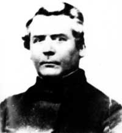
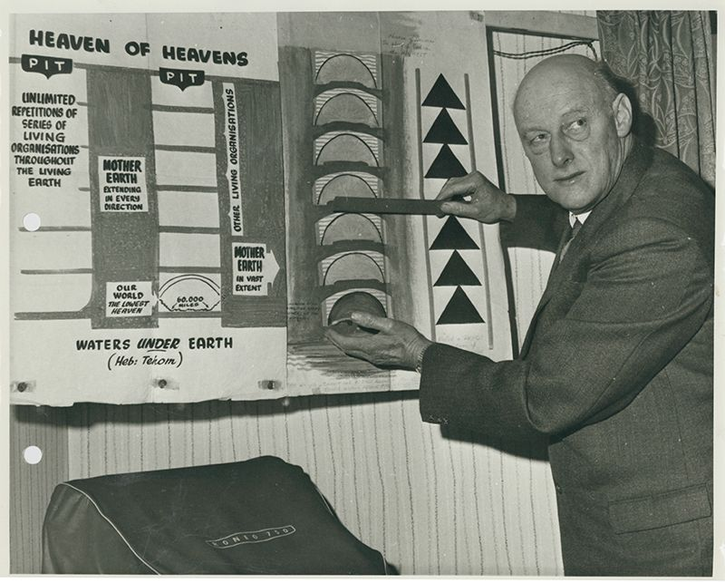

¿Porque?
Una gran libertad que pido permiso para tomar. En una pregunta o dos, humildemente haría. Aunque los científicos se ríen, es posible que tengan que temblar. Porque no pueden soportar las preguntas en absoluto; Que la Tierra es un globo dicen todos estos sabios, Un desgarro y giro a través del espacio lejano. A cientos y miles de millas en un día, Como una bola brillante y brillante grande. Pero, por favor, ¿me dirás cómo ven los aeronautas? En elevaciones tan altas como sea posible, ¿Una "superficie cóncava ancha"? lo que prueba señor, para mí Que la Tierra no es como una pelota: Ahora los científicos piensan que es la mayor suposición Para cualquiera que tenga la audacia, bumption. Con mero sentido común, o sentido común ordinario. Para cuestionar su "ciencia" en absoluto.
Pero dinos, querido “científico”, si tienes razón, ¿Cómo es que los viejos marineros tienen una visión tan clara? Para perforar más allá de tu curvatura, bastante. ¿Algunos cientos de pies, menos o más? Si pides una prueba de lo que he dicho: Encontrarás que "Cabo Hatteras", según he leído, “A una distancia de cuarenta millas, muy adelante, Se puede ver a menudo en la orilla.” Entonces, ¿la superficie del agua es plana, señor, en toda su circunferencia? En la práctica parece ser plana, pero se encuentra En teoría curvo, y toda la naturaleza está atada Para inclinarse ante las leyes de los "científicos": ¿Y por qué puntos de la brújula, si se puede adivinar? Tanto hacia el norte como hacia el sur, y al mismo tiempo, Si el centro no está al norte de un plano, ¿todos alineados? Por favor, dime el "por qué" y el "porque".
Si el centro es el norte, entonces el polo es un mito. Y la estrella del norte está justo en el cenit del centro, Entonces, la brújula apunta al nivel del centro de inmediato. Mientras que el sur es el círculo todo alrededor: Por mil millas fluye el gran Nilo hacia el mar Y cae solo un pie, así, entre tú y yo. Los ríos están tan nivelados como puede estarlo. Desmentir un suelo esférico.
Cómo es. Sir Science “Ciencia exacta”, así se dice. La distancia del sol en millas tiene una calificación tan diferente, ' De veinticuatro millones a cien dilatados. ¿E incluso de menos a mucho más? Porque esta distancia, tan muy elástica, Se considera la "vara de medir": ¡qué rimbombante! Para medir distancias estelares vastas y fantásticas, Entonces, ¿por qué está alterado? ¿Por qué? Oren cómo pudieron los antiguos predecir todos los eclipses. Así como los modernos, que dicen lo que es el “dip”. Y hasta el pianista explica dónde está el barco ¿Y traerlo de vuelta (¿arriba?) con un vaso? ¿Y cómo vive la gente en la estación “Antípodas”, Todos colgando la cabeza hacia abajo— ¡Oh, qué sensación!— ¿Y qué es eso que los retiene, "gravitación"? ¿Es sólido, líquido o “gas”? ” ¿Y por qué cuando se construyen canales y largos túneles? ¿Nunca se ha tenido en cuenta la curvatura? ¿Tienen miedo los constructores, agrimensores y otros ¿De deslizarse por la gran bola? ¿Y por qué cuando se ve un barco saliendo de la orilla ¿Se elevará a la altura de tus ojos, y no más, ¿En la montaña o en el llano tanto detrás como delante? — Perspectivamente demostrando que no hay "caída".
Por muy alto que uno intente sobre el nivel del mar. Aún más y más altos horizontes se levantarán. Y siempre bastante nivelado en línea con los ojos, Pero en ninguna parte la curva de un globo: Galileo no aportó ninguna prueba en su misión. Cuando es castigado, ¡ay! por la Inquisición de la antigua Roma; Pero sufrió por enseñar una posición bastante falsa. Así que se puso una túnica de penitente. La Ley del Señor es fidedigna, segura, La descripción del Creador es perfecta y pura, Y la Palabra de nuestro Dios permanecerá para siempre Mientras que la sabiduría de los mundanos caerá: Y los cielos "arriba", dice el Señor Altísimo, La tierra está “debajo” de la gran cúpula del cielo. Y "debajo de la tierra" está el "agua", entonces ¿por qué ¿Creer en la “bola” del infiel? ”
¿Quien?

Samuel Birley Rowbotham (1816-1884)
Samuel Rowbotham Conocido a veces como Parallax, Samuel Birly Rowbotham fue el padre del movimiento de la Tierra Plana; el era un Inventor inglés y autor que escribió Zetetic Astronomy: Earth Not A Globe, basado en sus estudios científicos de la tierra durante una década. Usando experimentos y la razón, realizó pruebas usando su teoría única sobre el método científico, a la que llamó zetetismo; descubrió la imagen común de la tierra plana - un disco plano centrado en el Polo Norte y limitado a lo largo de su borde sur por una pared de hielo. Samuel descubrió de forma independiente la misma conclusión aquí que los monjes taoístas hicieron mucho antes. Mostró que los cielos estaban tan cerca como a unos pocos miles de millas por encima de nosotros, mostrando que el experimento de Eratóstene está formulado incorrectamente. Rowbotham también predijo el Calentamiento Planar al investigar Temperaturas subterráneas actuales. Antes de su trabajo con Flat Earth, también tuvo un breve período al frente de una comuna socialista. Rowbotham y sus seguidores ganaron fama al participar en un debate público estructurado y racional, pero aún vivo, con los principales científicos del momento. Desafiando a Alfred Russel Wallace, uno de los fundadores de la evolución, la Sociedad se encontró nuevamente bajo ataque. Hubo disputa sobre quién era el vencedor, y las cuentas muestran que probablemente fue una uva amarga del lado de Wallace. Wallace pronto ganó notoriedad por sus creencias en los fantasmas y lo sobrenatural; habiendo renunciado aparentemente a la La lucha contra la Tierra plana siguió luchando en la búsqueda de la verdad. Después de la muerte de Samuel, sus seguidores fundaron la Universal Zetetic Society y encargaron una revista titulada The Earth No es una revisión del globo. El grupo luchó con pasión hasta principios del siglo XX. La tumba del difunto Doctor está en la foto de abajo.

Samuel Shenton (1903 - 1971)
Shenton, miembro de la Royal Astronomical Society y la Royal Geographic Society, fundó Flat Earth Society en 1956, después de cambiarle el nombre a Universal Zetetic Society. A menudo, se notaba cuánto de una 'persona común' era. Dirigió y trabajó sirviendo a la Sociedad incluso durante una enfermedad grave hasta su muerte en 1971, momento en el que pasó el liderazgo a Charles K Johnson. Un archivo de su colección personal está parcialmente digitalizado en este sitio, incluidos diarios, fotos, correspondencia personal e incluso carteles de conferencias. Shenton creía en un plano infinito plano, con nuestra zona habitable rodeada por una cúpula con un punto de salida central. Incluso consideró la posibilidad de otros mundos domo similares en nuestro propio plano.
Famosos que nos apoyan
Kyrie Irving
Para alguien cuyo trabajo es tocar objetos esféricos, uno pensaría que la superestrella de la NBA, Kyrie Irving, sabría un par de cosas sobre las cosas que son redondas. Pero al parecer no lo hace. En un podcast presentado por sus compañeros de equipo Channing Frye y Richard Jefferson, Irving reveló que cree que la Tierra es plana. "Esto ni siquiera es una teoría de la conspiración", les dijo Irving. "La Tierra es plana". Irving cree que el gobierno nos está mintiendo sobre la forma de la Tierra e intentó explicarles a sus compañeros de equipo sobre la rotación del sol y los planetas. Más tarde continuó diciendo que solo estaba tratando de tener "una conversación abierta", pero sus comentarios alentaron a muchos otros atletas a subirse al carro de la Tierra plana.

Shaquille O'Neal
Siguiendo una larga tradición de jugadores de la NBA que aparentemente creen que la Tierra es realmente plana, Shaquille O'Neal dijo en su podcast que, de hecho, la Tierra es plana. "Es verdad", dijo en Big Podcast con Shaq. "La Tierra es plana". ¿Su razonamiento? Manejó de Florida a California y dijo que todo el viaje fue claramente plano para él. Esta información llegó solo unas semanas después de que otros jugadores de la NBA, incluidos Kyrie Irving y el alero de los Golden State Warriors, Draymond Green, dijeron que ellos también creen que el mundo es plano. El comisionado de la NBA, Adam Silver, aprovechó la oportunidad en su discurso sobre el estado de la liga para decir que la Tierra es redonda, pero esto solo reforzó a los jugadores actuales y anteriores de la NBA para reforzar sus creencias.